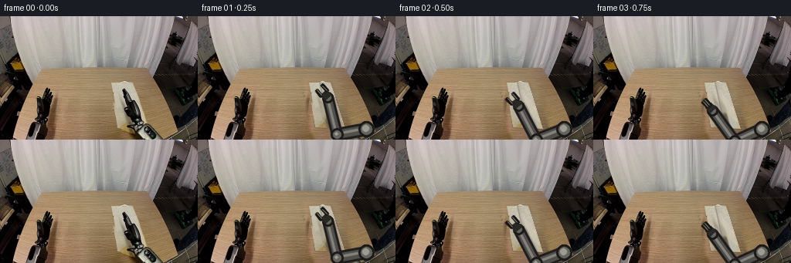
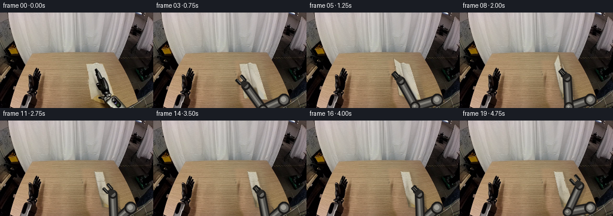
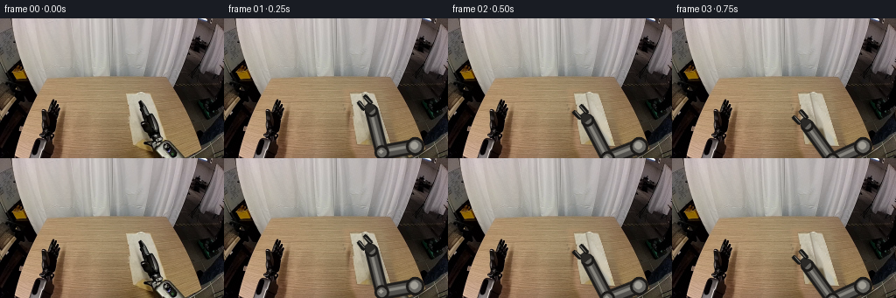

CODING AGENTS AS PIXEL WORLD MODELS
traex/GPT-5.6-Sol · common50_0030
点击播放 · 原生 RGB 像素
逐轮保存的候选
回放视频、检查图与代码变化。
每份候选均可单独播放。实际图片检查记录在下方工具轨迹中。
候选 01播放与检查图
点击播放 · 原生 RGB 像素

展开代码变化
--- 上一保存版本
+++ 本次保存版本
@@ -0,0 +1,302 @@
+"""Generate a short, deterministic manipulation sequence from first_frame.png.
+
+The scene is kept camera-locked. The table and fixed parts of the robot come
+from the supplied photograph; the moving linkage and cloth are reconstructed
+from colours and texture in that photograph and rendered with 2-D projective
+geometry. The motion depicts an edge-to-edge fold rather than translating the
+entire cloth, which keeps the far half planted on the table throughout.
+"""
+
+from pathlib import Path
+
+import cv2
+import numpy as np
+from PIL import Image
+
+import artifact_io
+
+
+ROOT = Path(__file__).resolve().parent
+W, H = 256, 160
+
+
+def smoothstep(x):
+ x = np.clip(x, 0.0, 1.0)
+ return x * x * (3.0 - 2.0 * x)
+
+
+def feather_composite(dst, src, mask, opacity=1.0):
+ """Alpha composite RGB src into dst with a floating point mask."""
+ a = np.clip(mask.astype(np.float32) * opacity, 0, 1)[..., None]
+ return np.clip(dst.astype(np.float32) * (1 - a) + src.astype(np.float32) * a,
+ 0, 255).astype(np.uint8)
+
+
+def make_background(first):
+ """Remove the original cloth and the diagonal moving wrist.
+
+ A neighbouring strip of the same wood surface is used, preserving the
+ source frame's grain, lighting and camera noise rather than inventing a
+ flat fill. The replacement is feathered and is mostly covered again by
+ the animated objects.
+ """
+ yy, xx = np.mgrid[:H, :W]
+ donor_x = np.clip(xx - 70, 0, W - 1)
+ donor = first[yy, donor_x].astype(np.float32)
+ # Match the rightward darkening of the original tabletop.
+ donor *= (1.0 - np.clip((xx - 135) / 500.0, 0, .13))[..., None]
+ donor = np.clip(donor, 0, 255).astype(np.uint8)
+
+ m = np.zeros((H, W), np.uint8)
+ cv2.fillPoly(m, [np.array([(137, 80), (179, 80), (199, 147),
+ (202, 159), (151, 159), (145, 145)], np.int32)], 255)
+ # Do not disturb the fixed robot housing at the far right.
+ m[:, 203:] = 0
+ soft = cv2.GaussianBlur(m, (0, 0), 2.0).astype(np.float32) / 255.0
+ bg = feather_composite(first, donor, soft)
+ return bg
+
+
+def make_cloth_texture(first):
+ """Rectify the visible beige cloth to a reusable material texture."""
+ # Approximate corners of the cloth in the supplied perspective view.
+ quad = np.float32([[143, 84], [171, 84], [190, 145], [151, 143]])
+ tw, th = 72, 84
+ rect = np.float32([[0, 0], [tw - 1, 0], [tw - 1, th - 1], [0, th - 1]])
+ M = cv2.getPerspectiveTransform(quad, rect)
+ tex = cv2.warpPerspective(first, M, (tw, th), flags=cv2.INTER_CUBIC,
+ borderMode=cv2.BORDER_REFLECT)
+
+ # The source wrist occludes a diagonal part of the material. Detect only
+ # its neutral/dark pixels, inpaint them from surrounding fabric, and retain
+ # all of the genuine fine-grained cloth texture elsewhere.
+ f = tex.astype(np.int16)
+ lum = f.mean(2)
+ chroma = f.max(2) - f.min(2)
+ occ = ((lum < 132) & (chroma < 34)).astype(np.uint8) * 255
+ occ = cv2.dilate(occ, np.ones((3, 3), np.uint8), iterations=1)
+ tex = cv2.inpaint(tex, occ, 5, cv2.INPAINT_TELEA)
+
+ # Gently steer the material toward beige while preserving local luminance.
+ beige = np.array([183., 173., 151.], np.float32)
+ t = tex.astype(np.float32)
+ gray = t.mean(2, keepdims=True)
+ t = .76 * t + .24 * (gray + beige - beige.mean())
+ # Sub-pixel weave, deterministic and low contrast.
+ y, x = np.mgrid[:th, :tw]
+ weave = 1.3 * np.sin(x * 2.25) + .8 * np.sin(y * 2.65)
+ t += weave[..., None]
+ return np.clip(t, 0, 255).astype(np.uint8)
+
+
+def warp_piece(canvas, texture, src_quad, dst_quad, alpha=1.0):
+ """Project a quadrilateral piece of texture onto the full image."""
+ M = cv2.getPerspectiveTransform(np.float32(src_quad), np.float32(dst_quad))
+ warped = cv2.warpPerspective(texture, M, (W, H), flags=cv2.INTER_CUBIC,
+ borderMode=cv2.BORDER_REFLECT)
+ sm = np.zeros(texture.shape[:2], np.uint8)
+ cv2.fillConvexPoly(sm, np.int32(np.round(src_quad)), 255)
+ wm = cv2.warpPerspective(sm, M, (W, H), flags=cv2.INTER_LINEAR,
+ borderMode=cv2.BORDER_CONSTANT)
+ return feather_composite(canvas, warped, wm.astype(np.float32) / 255.0, alpha)
+
+
+def add_shadow(frame, polygon, blur=4.0, strength=.25, offset=(2, 4)):
+ mask = np.zeros((H, W), np.uint8)
+ p = np.asarray(polygon, np.float32) + np.asarray(offset, np.float32)
+ cv2.fillConvexPoly(mask, np.int32(np.round(p)), 255)
+ mask = cv2.GaussianBlur(mask, (0, 0), blur).astype(np.float32) / 255.0
+ out = frame.astype(np.float32)
+ out *= (1.0 - strength * mask[..., None])
+ return np.clip(out, 0, 255).astype(np.uint8)
+
+
+# Cloth geometry. Each pair is top/bottom along the folding direction.
+LEFT_T = np.array([143., 84.])
+LEFT_B = np.array([151., 143.])
+RIGHT_T = np.array([171., 84.])
+RIGHT_B = np.array([190., 145.])
+FOLD_T = (LEFT_T + RIGHT_T) / 2
+FOLD_B = (LEFT_B + RIGHT_B) / 2
+
+
+def render_cloth(frame, tex, fold_progress, lift, smooth_amount=0.0):
+ """Render stationary far half and the near flap folded over it."""
+ tw, th = tex.shape[1], tex.shape[0]
+ half = (tw - 1) / 2
+
+ # The far half never slides: an important physical anchor for the fold.
+ stationary_dst = [FOLD_T, RIGHT_T, RIGHT_B, FOLD_B]
+ frame = add_shadow(frame, stationary_dst, blur=2.2, strength=.12, offset=(1, 2))
+ frame = warp_piece(frame, tex,
+ [[half, 0], [tw - 1, 0], [tw - 1, th - 1], [half, th - 1]],
+ stationary_dst)
+
+ p = smoothstep(fold_progress)
+ mt = LEFT_T * (1 - p) + RIGHT_T * p
+ mb = LEFT_B * (1 - p) + RIGHT_B * p
+ # Screen-up displacement conveys lifting in this oblique camera view.
+ mt = mt + np.array([0., -lift])
+ mb = mb + np.array([0., -lift * .72])
+ moving_dst = [mt, FOLD_T, FOLD_B, mb]
+
+ frame = add_shadow(frame, moving_dst, blur=3.0 + lift * .12,
+ strength=.12 + min(lift / 85., .20),
+ offset=(2 + lift * .10, 3 + lift * .18))
+
+ # A narrow warm underside appears along the held edge while airborne.
+ if lift > 1.0:
+ under = frame.copy()
+ edge = np.array([mt, mb, mb + [2.2, 3.0], mt + [2.2, 2.0]])
+ cv2.fillConvexPoly(under, np.int32(np.round(edge)), (126, 108, 83), cv2.LINE_AA)
+ frame = feather_composite(frame, under,
+ (cv2.cvtColor(cv2.absdiff(frame, under), cv2.COLOR_RGB2GRAY) > 0).astype(np.float32))
+
+ frame = warp_piece(frame, tex,
+ [[0, 0], [half, 0], [half, th - 1], [0, th - 1]],
+ moving_dst)
+
+ # Fold edge and increasingly faint surface wrinkles. These make the final
+ # doubled layer legible, then visibly flatten during smoothing.
+ overlay = frame.copy()
+ wrinkle_alpha = 1.0 - .78 * smooth_amount
+ ft, fb = np.int32(np.round(FOLD_T)), np.int32(np.round(FOLD_B))
+ cv2.line(overlay, tuple(ft), tuple(fb), (124, 111, 91), 1, cv2.LINE_AA)
+ if p > .88:
+ for frac, bend in ((.30, -1.2), (.63, 1.0)):
+ a = mt * (1 - frac) + mb * frac
+ b = FOLD_T * (1 - frac) + FOLD_B * frac
+ mid = (a + b) / 2 + np.array([0., bend * wrinkle_alpha])
+ pts = np.int32(np.round([a, mid, b])).reshape(-1, 1, 2)
+ cv2.polylines(overlay, [pts], False, (151, 139, 116), 1, cv2.LINE_AA)
+ frame = feather_composite(frame, overlay,
+ (cv2.cvtColor(cv2.absdiff(frame, overlay), cv2.COLOR_RGB2GRAY) > 0).astype(np.float32),
+ .58 * wrinkle_alpha)
+ held = (mt + mb) * .5
+ return frame, held
+
+
+def ik_elbow(anchor, wrist, l1=38.0, l2=49.0):
+ """Stable two-link inverse kinematics, selecting the upper/right elbow."""
+ dvec = wrist - anchor
+ d = float(np.linalg.norm(dvec))
+ d = np.clip(d, abs(l1 - l2) + .01, l1 + l2 - .01)
+ u = dvec / (np.linalg.norm(dvec) + 1e-8)
+ a = (l1*l1 - l2*l2 + d*d) / (2*d)
+ h = np.sqrt(max(l1*l1 - a*a, 0.0))
+ perp = np.array([-u[1], u[0]])
+ # The minus branch keeps the elbow close to the right robot housing.
+ return anchor + a*u - h*perp
+
+
+def draw_robot(frame, target, grip, press=False):
+ """Draw a rigid, consistently proportioned articulated right arm."""
+ out = frame.copy()
+ anchor = np.array([218., 146.])
+ target = np.asarray(target, np.float64)
+ # Wrist sits behind the jaws along a down-right approach vector.
+ approach = np.array([.66, .75])
+ wrist = target + approach * 12.0
+ elbow = ik_elbow(anchor, wrist)
+
+ # Grounded cast shadow follows the links but remains very subtle.
+ sh = out.copy()
+ for a, b, width in ((anchor, elbow, 14), (elbow, wrist, 12)):
+ cv2.line(sh, tuple(np.int32(a + [3, 4])), tuple(np.int32(b + [3, 4])),
+ (15, 12, 10), width + 3, cv2.LINE_AA)
+ diff = (cv2.cvtColor(cv2.absdiff(out, sh), cv2.COLOR_RGB2GRAY) > 0).astype(np.float32)
+ out = feather_composite(out, sh, cv2.GaussianBlur(diff, (0, 0), 2), .19)
+
+ # Thick dark casings, metal inner rails and highlights. Every frame uses
+ # exactly the same widths and joint radii, avoiding elastic deformation.
+ for a, b, width in ((anchor, elbow, 15), (elbow, wrist, 13)):
+ cv2.line(out, tuple(np.int32(a)), tuple(np.int32(b)), (31, 29, 27), width, cv2.LINE_AA)
+ cv2.line(out, tuple(np.int32(a)), tuple(np.int32(b)), (81, 79, 75), width - 5, cv2.LINE_AA)
+ off = np.array([-1, -1])
+ cv2.line(out, tuple(np.int32(a + off)), tuple(np.int32(b + off)),
+ (132, 130, 123), 2, cv2.LINE_AA)
+ for c, r in ((anchor, 10), (elbow, 8), (wrist, 7)):
+ cv2.circle(out, tuple(np.int32(c)), r, (28, 26, 24), -1, cv2.LINE_AA)
+ cv2.circle(out, tuple(np.int32(c)), r - 3, (102, 100, 95), -1, cv2.LINE_AA)
+ cv2.circle(out, tuple(np.int32(c - [1, 1])), max(2, r - 6), (158, 155, 146), -1, cv2.LINE_AA)
+
+ # Palm and two parallel jaws. gap closes around the edge and opens on
+ # release; in pressing mode the jaws are tucked close to form a smooth pad.
+ v = (target - wrist)
+ v /= np.linalg.norm(v) + 1e-8
+ n = np.array([-v[1], v[0]])
+ palm_c = wrist + v * 5
+ corners = [palm_c + n*5 - v*4, palm_c - n*5 - v*4,
+ palm_c - n*5 + v*5, palm_c + n*5 + v*5]
+ cv2.fillConvexPoly(out, np.int32(np.round(corners)), (43, 41, 38), cv2.LINE_AA)
+ gap = 2.0 if (grip or press) else 5.0
+ jaw_len = 9.0 if not press else 7.0
+ for side in (-1, 1):
+ a = palm_c + n * side * gap + v * 3
+ b = a + v * jaw_len
+ cv2.line(out, tuple(np.int32(a)), tuple(np.int32(b)), (24, 23, 21), 4, cv2.LINE_AA)
+ cv2.line(out, tuple(np.int32(a - n*side*.6)), tuple(np.int32(b - n*side*.6)),
+ (119, 116, 108), 1, cv2.LINE_AA)
+ return out
+
+
+def motion_state(i):
+ """Return fold, lift, gripper target, grip, smoothing and press state."""
+ left_mid = (LEFT_T + LEFT_B) * .5
+ right_mid = (RIGHT_T + RIGHT_B) * .5
+ if i <= 3: # controlled approach from above/right
+ q = smoothstep(i / 3.0)
+ target = np.array([166., 91.]) * (1-q) + left_mid * q
+ return 0.0, 0.0, target, i >= 3, 0.0, False
+ if i == 4: # close jaws and establish the grasp
+ return 0.0, 0.0, left_mid, True, 0.0, False
+ if 5 <= i <= 10: # lift and carry the near edge over the far edge
+ p = (i - 4) / 6.0
+ lift = 18.0 * np.sin(np.pi * p)
+ held = left_mid * (1-smoothstep(p)) + right_mid * smoothstep(p)
+ held[1] -= lift * .82
+ return p, lift, held, True, 0.0, False
+ if i == 11: # settle and release
+ return 1.0, 0.0, right_mid, False, .05, False
+ if 12 <= i <= 16: # press and sweep from crease to free edge
+ q = smoothstep((i - 12) / 4.0)
+ fold_mid = (FOLD_T + FOLD_B) * .5
+ target = fold_mid * (1-q) + right_mid * q
+ return 1.0, 0.0, target, False, .18 + .78*q, True
+ # Retract cleanly, leaving the folded cloth flat and undisturbed.
+ q = smoothstep((i - 16) / 3.0)
+ target = right_mid * (1-q) + np.array([193., 100.]) * q
+ return 1.0, 0.0, target, False, 1.0, False
+
+
+def main():
+ first = np.asarray(Image.open(ROOT / "first_frame.png").convert("RGB"), dtype=np.uint8)
+ assert first.shape == (H, W, 3)
+ bg = make_background(first)
+ tex = make_cloth_texture(first)
+ frames = []
+ for i in range(20):
+ if i == 0:
+ frames.append(first.copy())
+ continue
+ fold, lift, target, grip, smoothing, press = motion_state(i)
+ frame = bg.copy()
+ frame, held = render_cloth(frame, tex, fold, lift, smoothing)
+ # During the fold, geometry is authoritative for the exact held edge.
+ if 5 <= i <= 10:
+ target = held
+ frame = draw_robot(frame, target, grip, press)
+ # Mild source-like sensor grain prevents pristine rendered regions from
+ # looking pasted onto the photograph. It is fixed spatially (no flicker).
+ yy, xx = np.mgrid[:H, :W]
+ grain = ((xx * 17 + yy * 29) % 7 - 3).astype(np.int16)
+ frame = np.clip(frame.astype(np.int16) + (grain[..., None] // 3), 0, 255).astype(np.uint8)
+ frames.append(frame)
+
+ frames = np.stack(frames).astype(np.uint8)
+ assert np.array_equal(frames[0], first)
+ artifact_io.save(frames, ROOT)
+
+
+if __name__ == "__main__":
+ main()
候选 02播放与检查图
点击播放 · 原生 RGB 像素


展开代码变化
--- 上一保存版本
+++ 本次保存版本
@@ -247,7 +247,7 @@
if i <= 3: # controlled approach from above/right
q = smoothstep(i / 3.0)
target = np.array([166., 91.]) * (1-q) + left_mid * q
- return 0.0, 0.0, target, i >= 3, 0.0, False
+ return 0.0, 0.0, target, False, 0.0, False
if i == 4: # close jaws and establish the grasp
return 0.0, 0.0, left_mid, True, 0.0, False
if 5 <= i <= 10: # lift and carry the near edge over the far edge
可观测工具轨迹
实际执行的命令与返回图片。
命令 1exit 0
/bin/bash -lc "cat GENERATION_RULES.md && printf '\\n--- PROMPT ---\\n' && cat prompt.txt"
命令 2exit 0
/bin/bash -lc "find . -maxdepth 2 -type f -printf '%p %s bytes\\n' | sort"
命令 3exit 0
/bin/bash -lc "python3 - <<'PY'
from PIL import Image
im=Image.open('first_frame.png')
print(im.mode, im.size)
import numpy as np
x=np.array(im)
print(x.shape,x.dtype,x.min(),x.max(),x.mean(axis=(0,1)))
PY"命令 4exit 0
/bin/bash -lc "cat task_spec.json && sed -n '1,240p' artifact_io.py"
命令 5exit 0
/bin/bash -lc "python3 - <<'PY'
from PIL import Image
import numpy as np
im=np.asarray(Image.open('first_frame.png'))
# print coarse block RGB 8x8; quantized labels from kmeans implemented quickly
from sklearn.cluster import KMeans
small=im.reshape(-1,3)[::4]
k=KMeans(12,random_state=1,n_init=10).fit(small)
lab=k.predict(im.reshape(-1,3)).reshape(im.shape[:2])
print('centers')
for i,c in enumerate(k.cluster_centers_.round().astype(int)): print(i,c, (lab==i).sum())
chars='0123456789AB'
# majority each 4x4 gives 64x40
for y in range(0,160,4):
print(''.join(chars[np.bincount(lab[y:y+4,x:x+4].ravel(),minlength=12).argmax()] for x in range(0,256,4)))
PY"命令 6exit 0
/bin/bash -lc "python3 - <<'PY'
import cv2, numpy as np
from PIL import Image
im=np.array(Image.open('first_frame.png'))
g=cv2.cvtColor(im,cv2.COLOR_RGB2GRAY)
e=cv2.Canny(g,50,120)
# block edge density 2x4 chars
chars=' .:-=+*#%@'
for y in range(0,160,4):
print(''.join(chars[min(9,int(e[y:y+4,x:x+2].mean()/26))] for x in range(0,256,2)))
PY"命令 7exit 0
/bin/bash -lc "python3 - <<'PY'
from PIL import Image
import numpy as np, cv2
im=np.array(Image.open('first_frame.png'))
# report average/min/max and edge density for 16px tiles y >=56
for y in range(48,160,8):
s=[]
for x in range(0,256,16):
p=im[y:y+8,x:x+16]; m=p.mean((0,1)).astype(int)
s.append('%02X%02X%02X'%tuple(m))
print(f'y{y:03}', ' '.join(s))
# HSV segmentation components for low saturation beige regions
hsv=cv2.cvtColor(im,cv2.COLOR_RGB2HSV)
for name,mask in [
('wood',cv2.inRange(hsv,(5,30,60),(35,180,230))),
('lightlow',cv2.inRange(hsv,(0,0,110),(35,80,240))),
('dark',cv2.inRange(hsv,(0,0,0),(180,255,65)) )]:
n,lab,st,cen=cv2.connectedComponentsWithStats(mask)
print('\\n',name)
for i in np.argsort(st[1:,4])[-12:]+1:
x,y,w,h,a=st[i];print((int(x),int(y),int(w),int(h),int(a)), np.round(cen[i],1))
PY"命令 8exit 0
/bin/bash -lc "python3 - <<'PY'
from PIL import Image
import numpy as np
from sklearn.cluster import KMeans
im=np.array(Image.open('first_frame.png'))
roi=im[55:155,120:220]
k=KMeans(14,random_state=4,n_init=10).fit(roi.reshape(-1,3)[::2])
lab=k.predict(im.reshape(-1,3)).reshape(160,256)
chars='0123456789ABCD'
print('centers')
for i,c in enumerate(k.cluster_centers_.round().astype(int)): print(chars[i],c)
for y in range(56,153,2):
print(f'{y:03} '+''.join(chars[np.bincount(lab[y:y+2,x:x+2].ravel(),minlength=14).argmax()] for x in range(120,222,2)))
PY"命令 9exit 0
/bin/bash -lc "python3 - <<'PY'
from PIL import Image
import numpy as np
im=np.array(Image.open('first_frame.png')).astype(int)
# categorize: K black <50, d dark<85, g neutral gray sat<25, L beige light/sat, W cloth likely RGB>130 sat<50, wood else
mx=im.max(2); mn=im.min(2); lum=im.mean(2)
for y in range(76,158,2):
s=''
for x in range(136,216,2):
p=im[y:y+2,x:x+2]; l=p.mean(); sat=np.mean(p.max(2)-p.min(2))
if l<35:c='K'
elif l<70:c='d'
elif sat<18 and l>110:c='G'
elif l>155 and sat<55:c='C'
elif sat<30 and l<120:c='g'
elif p[:,:,0].mean()-p[:,:,2].mean()>35:c='w'
else:c='.'
s+=c
print(f'{y:03} {s}')
PY"命令 10exit 0
/bin/bash -lc "python3 - <<'PY'
from PIL import Image
import numpy as np
im=np.array(Image.open('first_frame.png')).astype(int)
for y in range(82,160,2):
vals=[]
for x in range(140,194):
p=im[y,x]; lum=p.mean(); sat=p.max()-p.min()
# central non cloth: dark or gray-neutral (cloth light)
if lum<105 or (sat<18 and lum<165): vals.append(x)
# runs
runs=[]
if vals:
a=p=vals[0]
for z in vals[1:]:
if z>p+1:runs.append((a,p));a=z
p=z
runs.append((a,p))
print(y,runs)
PY"命令 11exit 0
/bin/bash -lc "python3 - <<'PY'
from PIL import Image
import cv2,numpy as np
im=np.array(Image.open('first_frame.png'))
# LAB-ish cloth: light, neutral-ish, R-B 10..45, RGB avg >140, x 120..200 y70+
r,g,b=im[:,:,0].astype(int),im[:,:,1].astype(int),im[:,:,2].astype(int)
mask=(r>145)&(g>135)&(b>120)&((r-b)<55)&((r-b)>5)
# morph and row extents in ROI
for y in range(70,150,2):
xs=np.where(mask[y:y+2,120:200].any(0))[0]+120
# runs >=2
runs=[]
if len(xs):
a=p=xs[0]
for z in xs[1:]:
if z>p+1:
if p-a>=1:runs.append((a,p))
a=z
p=z
if p-a>=1:runs.append((a,p))
print(y,runs)
PY"命令 12exit 0
/bin/bash -lc "python3 generate.py && python3 - <<'PY'
import numpy as np
from PIL import Image
z=np.load('pixels.npz')['pixels']
print('packed',z.shape,z.dtype)
first=np.array(Image.open('first_frame.png'))
p=np.stack([((z[:,:,i]>>16)&255) for i in range(20)],0)
print('first red exact',np.array_equal(p[0],first[:,:,0]))
for i in range(20):
im=np.array(Image.open(f'frames/{i:02}.png'))
d=np.mean(np.abs(im.astype(float)-first.astype(float)))
print(i, round(d,2), im.mean((0,1)).round(1))
PY"命令 13exit 0
/bin/bash -lc "python3 - <<'PY'
from PIL import Image
import numpy as np, cv2
ims=np.stack([np.array(Image.open(f'frames/{i:02}.png')) for i in range(20)])
for i in range(1,20):
d=np.max(np.abs(ims[i].astype(int)-ims[i-1].astype(int)),2)
ys,xs=np.where(d>8)
print(i,'pix',len(xs),'bbox', (xs.min(),ys.min(),xs.max(),ys.max()) if len(xs) else None,'meanÎ',round(d.mean(),2),'p95',np.percentile(d,95))
PY"命令 14exit 0
/bin/bash -lc "python3 generate.py && python3 - <<'PY'
from pathlib import Path
from PIL import Image
import numpy as np
ims=np.stack([np.array(Image.open(f'frames/{i:02}.png')) for i in range(20)])
assert ims.shape==(20,160,256,3) and ims.dtype==np.uint8
assert np.array_equal(ims[0],np.array(Image.open('first_frame.png')))
assert all(Path(x).is_file() for x in ['pixels.npz','inspection.png','transition_check.png','index.html'])
print('validated',ims.shape,ims.dtype,'first exact; output bytes',Path('pixels.npz').stat().st_size)
print('frame deltas',[int(np.count_nonzero(np.any(ims[i]"'!=ims[i-1],axis=2))) for i in range(1,20)])
PY'保存候选 2 份；完成命令 14 次；可验证图片返回 0 张。原始 API 响应与完整日志保留在本地。